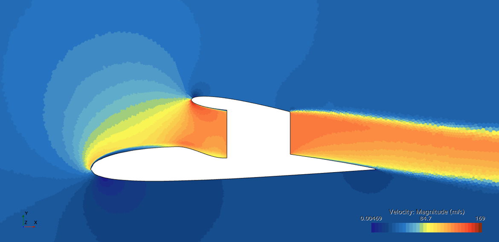
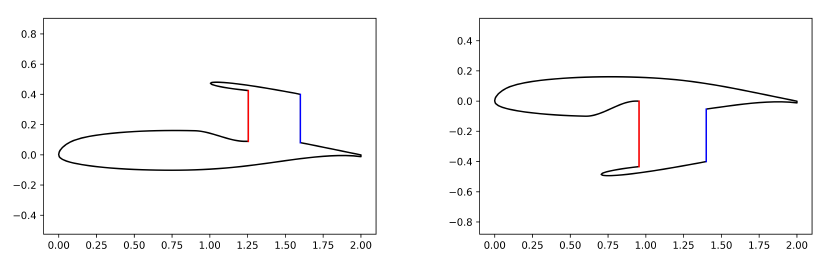
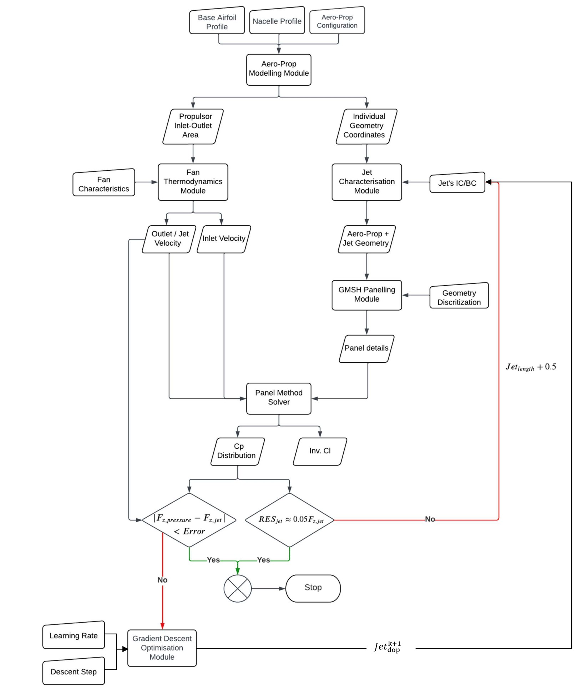
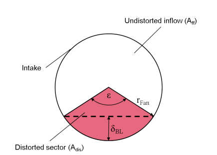
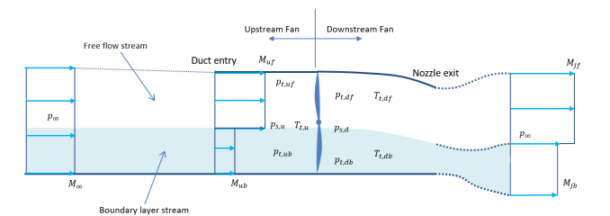
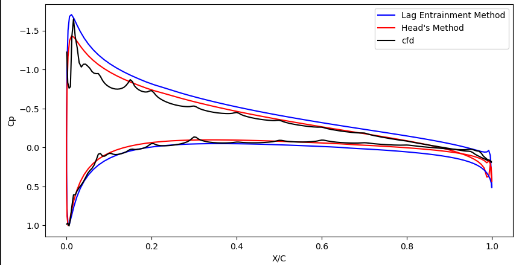

03 · Research · Jan 2023 — Mar 2024
Research Assistant - Panel Method for Conceptual Design of Aero-Propulsive Architectures
CFD Velocity Contour

This project expands the design space for Aero-Propulsive Architectures by advancing an inviscid panel method solver. By calculating boundary layer parameters directly from inviscid flow solutions, the tool achieves viscous-inviscid coupling. The 0D thermodynamic model was also upgraded to account for Boundary Layer Ingestion (BLI), creating a more realistic conceptual design framework.
- Couple the panel method (inviscid model) to a viscous one to be able to characterize the boundary layer developing on the physical surfaces.
- Use the boundary layer parameters obtained at the control point located at the inlet of the propulsor to improve the 0D thermodynamic model (allowing to benefit from the BLI).
- Developed a python code that characterizes the flow (pressure distribution) using the panel method theory around the aero propulsive geometry. The propulsor is composed of an inlet, a fan, a duct and a nozzle.
- A 0D thermodynamic model computes the inlet and outlet velocities of the propulsor.
- The jet is incorporated into the aero propulsive architecture.
- Geometry is divided into 6 sections paneled using GMSH.
- Modeled uniform flow, source/sink flow, and vortex flow distributions.
- Imposed boundary conditions like zero normal velocity and Kutta conditions.
- Iterated jet shape until thrust balances vertical pressure forces.
- Upgraded the tool to model different kinds of geometries, optimizing convergence using gradient descent.
- Viscous-inviscid coupling: Evaluated laminar and turbulent boundary layer parameters (displacement thickness, momentum thickness, skin friction). Solved boundary layer equations.
- Used a boundary layer substitution model to replace the boundary layer profile with an averaged stream, splitting incoming flow into a boundary layer stream and free flow stream using parallel compressor method (PCM).
A glimpse of the boundary layer equations utilized to model laminar-turbulent transition and evaluate the separation:
$$ \frac{d H_{12}^*}{ds} = \frac{1}{\delta_2} \frac{d H_{12}^*}{d H_1} \left\{C_E - H_1\left[0.5 C_f - (H_{12}-1) \frac{\delta_2}{V_t} \frac{d V_t}{ds}\right]\right\} $$
Sample of the velocity segment calculations determining local tangent distributions across airfoils:
# tangential velocities on the base airfoil
master_list = panel_list[n_outlet + n_jet1 : n_outlet + n_jet1 + n_foil1]
At_matrix_base = tvvp_ho1(master_list, panel_list, panel_count) + \
tvsp_ho1(master_list, panel_list, 1, panel_count) + \
tvsp_ho1(master_list, panel_list, 2, panel_count)
Bt_matrix_base = V_inf * np.sin([l['beta'] for l in master_list]).reshape(len(master_list), 1)
tan_vel_base = Bt_matrix_base - (1 / (2 * np.pi)) * np.matmul(At_matrix_base, strength_array)
cp_base = 1 - np.square(tan_vel_base / V_inf)
pressure_base = cp_base * (0.5 * rho_inf * V_inf**2) + p_inf
Sample demonstrating the initial geometry layout and solver for finding the jet mean line between control points:
def jet_segment(x_array, y_array, TE_x, TE_y, jet_length, jet_dop, jet_width, aoa, jet_theta, jet_assymptote_angle):
# Finding the solution of the jet mean line based on initial estimated penetration
guess_coef = np.matmul(np.linalg.inv(np.matrix([
[TE_x**3, TE_x**2, TE_x, 1],
[(TE_x + jet_length)**3, (TE_x + jet_length)**2, (TE_x + jet_length), 1],
[3 * TE_x**2, 2 * TE_x, 1, 0],
[3 * (TE_x + jet_length)**2, 2 * (TE_x + jet_length), 1, 0]
])), np.matrix([[TE_y], [TE_y - jet_dop], [-math.tan(jet_theta)], [math.tan(aoa)]]))
tck_jmean = interp.splrep(np.linspace(TE_x, TE_x + jet_length, 200),
np.transpose(guess_coef[0] * (np.linspace(TE_x, TE_x + jet_length, 200))**3 +
guess_coef[1] * (np.linspace(TE_x, TE_x + jet_length, 200))**2 +
guess_coef[2] * (np.linspace(TE_x, TE_x + jet_length, 200)) +
guess_coef[3]), k = 2)
# ... calculates geometric intrados and extrados distributions ...
return intrados_final, extrados_final, tck_jmean
Blown Wing Configuration (Upper and Lower Nacelle)

Algorithm of Inviscid Potential Flow for Aero-Propulsive Architecture Tool

Viscous - Inviscid Loop

The previous 0D thermodynamic model used in the algorithm for the computation of the propulsor outlet velocity was upgraded to take into account the non-uniform inlet flow velocity based on the methodology described in relevant literature.
A boundary layer substitution model allows the replacement of the boundary layer profile by an averaged stream of constant velocity. These are computed from the boundary layer parameters (displacement and momentum thickness) of the control point located at the inlet of the propulsor (the last control point of the base upper surface). Then the distorted and undistorted areas are computed.
Front View of Inflow Situation

A low-fidelity parallel compressor method (PCM) is used to model the propulsor. The incoming flow is divided into two streams, a 'boundary layer' stream and a 'free flow' stream. These streams do not interact. The control volume of the flow through the propulsor is shown below.
Control Volume of Flow Through Propulsor with BLI

The boundary layer is assumed to be adiabatic; thus the total temperature at the inlet is the same for both streams. Another assumption is that there is no boundary layer developing on the upper surface of the duct. With the fan power and isentropic efficiency as inputs, the necessary thermodynamic computations are carried out for each station (Station 0, 1, 2, and 9) without requiring extensive high-fidelity CFD reruns.
To validate the boundary layer equations and the viscous-inviscid coupling, we performed a pseudo-validation against high-fidelity CFD simulations (Star-CCM+). The segregated flow solver utilized a constant density k-ω SST turbulence model alongside a γ-Reθ transition model. The validation was conducted on a NACA0012 airfoil at a Reynolds number of 2.5 million (free-stream velocity of 38 m/s, 4° angle of attack).
While the attached flow physics aligned well, the semi-inverse method for separated flow was excluded from the calculation loop due to implementation complexities in the current architecture. For blown wing configurations, discrepancies were observed, which likely stem from changes in area induced by the propulsor—an effect not fully captured outside the boundary layer in the 2D panel method.
Coefficient of Pressure (Cp) for NACA0012 at Re = 2.5M
